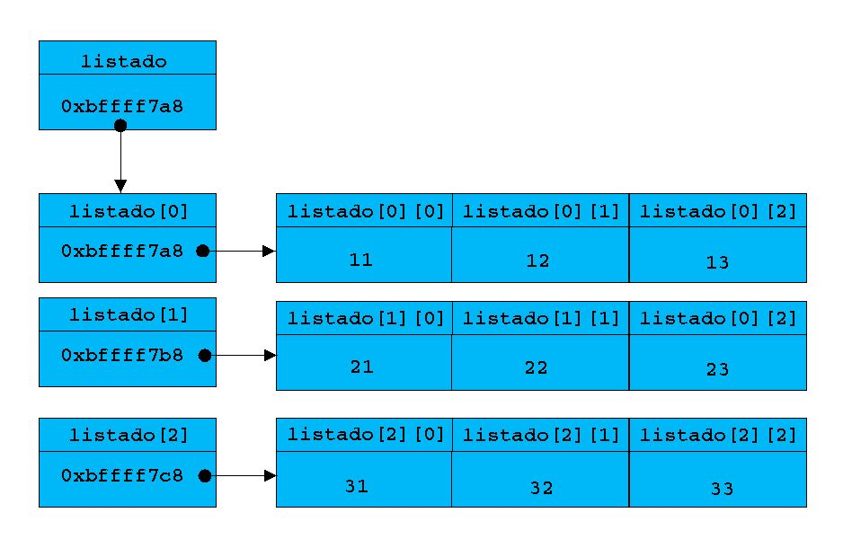

|
|
|
|
|
6.- Bucles y arrays (por el dr7tbien)
6.1.- Introducción (por el dr7tbien)
6.2.- Sentencias if() y else (por el dr7tbien)
6.3.- Carácter de fin de fichero EOF (por el dr7tbien)
6.4.- Sentencia switch() (por el dr7tbien)
6.5.- Sentencia break y función exit() (por el dr7tbien)
6.6.- Sentencia continue (por el dr7tbien)
6.7.- Función system() (por el dr7tbien)
6.8.- El bucle while() y do (por el dr7tbien)
6.9.- El bucle for() (por el dr7tbien)
6.10.- Arrays (por el dr7tbien)
6.11.-
Arrays multidimensionales (por
el dr7tbien)
 6.11.- Arrays multidimensionales
6.11.- Arrays multidimensionales
¿Que
procedimiento usaremos para referirnos a un array? Básicamente
es lo mismo, tal vez la referencia al array através de
punteros sea más dificil de comprender. Una referencia a un
array tratándolo como tal hace la comprensión del
programa más sencilla. Existirán momentos en que nos
sentiremos tentados a usar punteros, en ese importante caso los
usaremos. Si no nos apetece usarlos es muy importante no usarlos, ya
que de esta manera nos sentiremos mejor.
Una
vaca contable que se llama Sansona y que habita en la granja
Vacolandia es la que lleva el registro de toda la leche producida por
sus compañeras. Al cabo de todas las semanas ha de entregar un
registro de toda la leche producida por todas sus compañeras.
La vaca Sansona, que es programadora, ha decidido mostrar al capataz
de la granja el registro de la leche producida por medio de un array
bidimensional. Veamos como lo hace:
|
|
/*******************litros.c**********/ |
|
1 |
#include <stdio.h> |
|
2 |
#define DIAS 7 |
|
3 |
#define VACAS 8 |
|
4 |
|
|
5 |
main() |
|
6 |
{ |
|
7 |
float litros_leche[DIAS][VACAS]={ |
|
8 |
{10.2, 2.3, 11.4, 4.0, 6.5, 5.4, 3.2, 12.0}, |
|
9 |
{3.1, 3.2, 3.3, 9.5, 5.9, 5.9, 2.9, 4.7}, |
|
10 |
{0.9, 2.3, 14.4, 5.9, 6.1, 1.6, 3.7, 7.3}, |
|
11 |
{2.1, 1.3, 4.7, 9.8, 6.9, 6.1, 7.3, 4.2}, |
|
12 |
{7.0, 0.7, 7.4, 8.7, 7.8,14.0, 9.2, 2.7}, |
|
13 |
{0.7, 3.1, 4.4, 7.7, 5.5, 1.4, 2.9, 7.2}, |
|
14 |
{3.0, 3.3, 5.4, 9.5, 7.5, 3.5, 9.3, 11.1} |
|
15 |
}; |
|
16 |
int fila, columna; |
|
17 |
|
|
18 |
float total_leche, litros_dia, litros_vaca; |
|
19 |
for (fila=0, total_leche=0; fila < DIAS; fila++) |
|
20 |
for(columna=0; columna < VACAS; columna++) |
|
21 |
total_leche += litros_leche[fila][columna]; |
|
/*Es lo mismo que total_leche = total_leche + litros_leche[i][j]*/ |
|
|
22 |
printf("El total de leche leche producida en Vacolandia durante la semana asciende a %.2f litros /semana\n", total_leche); |
|
23 |
printf("La producción de leche por día en Vacolandia es de %.2f litros / día\n", total_leche / 7); |
|
24 |
printf("La producción de leche por vaca en Vacolandia durante la semana asciende a %.2f litros / vaca\n", total_leche/8); |
|
25 |
printf("\n"); |
|
26 |
for(fila=0; fila<DIAS; fila++) |
|
27 |
{ |
|
28 |
for(columna=0, litros_dia = 0; columna<VACAS; columna++) |
|
29 |
litros_dia += litros_leche[fila][columna]; |
|
/*Es lo mismo que escribir litros_dia = litros_dia + litros_leche[i][j] */ |
|
|
30 |
printf("El día %dº de la semana se han producido %.2f litros de leche en Vacolandia\n", fila+1, litros_dia); |
|
31 |
} |
|
32 |
printf("\n"); |
|
33 |
for(columna=0; columna<VACAS; columna++) |
|
34 |
{ |
|
35 |
for(fila=0, litros_vaca=0; fila<DIAS; fila++) |
|
36 |
litros_vaca +=litros_leche[fila][columna]; |
|
37 |
printf("La vaca nº %d ha producido %.2f litros / semana\n", columna, litros_vaca); |
|
38 |
} |
|
39 |
} |
En realidad la salida de este programa es lo de menos ya que nos muestra la producción de leche mostrada estadísticamente en Vacolandia, sin embargo nos muestra como se comportan los arrays de dos dimensiones. En nuestro caso la vaca programadora Sansona ha comprobado toda la leche producida por sus compañeras y anotado en el array de dos dimensiones la produción de leche. Como disponemos de 7 días en una semana y un total de 8 vacas productoras de leche en Vacolandia, Sansona ha dispuesto un array llamado litros_leche[DIAS][VACAS]. Podemos imaginarnos una serie de números divididos en filas y columnas de manera que podamos referirnos a cualquiera de los elementos referenciando el numero de su fila y columna, lo cuál nos llevará al elemento del array de dos dimensiones que pretendamos visualizar. Suponemos que la fila 0 corresponde a lunes, la fila 1 a martes, la fila 2 a miercoles, etc. Tambien hemos numerado las 8 vacas de las que disponemos, numerándolas de 0 a 7, de manera que si queremos saber la producción que ha realizado un lunes la vaca nº5, debemos de referenciar el elemento litros_leche[0][5] . Observa que bien funciona nuestro método.
A continuación, para averiguar el total de leche produciada por la totalidad de las vacas de Vacolandia usamos dos bucles for() y uno de ellos anidado en el otro. Observa que el bucle principal inicializa a 0 las variables filas y total_leche y como condición para que se ejecute el bucle es que filas sea menor que DIAS. A continuación se ejecuta for() y la primera sentencia que encontramos es otro bucle for() anidado, que no finaliza hasta que columna sea menor que VACAS. A continuación el valor de litros_leche[fila][columna] lo incrementa en la variable total_leche. Si te fijas, te darás cuenta que estos dos bucles están recorriendo el array litros_leche[][] leyendo el array de izquierda a derecha y de arriba abajo. Si no lo comprendes es necesario que cojas un papel y un boligrafo y lo compruebes haciéndote un esquema de los bucles. De esta manera entenderás mucho mejor las demás partes del programa.
Para averiguar la cantidad de leche producida por día hemos desarrollado otro dos bucles for() y como siempre uno de ellos anidado en el otro para poder recorrer el array entero. Para averiguar los litros de leche producidos por día hemos de sumar el valor de cada una de las filas del array. La suma de los valores contenidos en cada fila significa la totalidad de la leche producida en un día. Por tanto hemos de recorrer el array igual que antes, de izquierda a derecha y de arriba abajo, de manera que cada vez que lleguemos al final de cada fila, se realice la suma de la fila y nos muestre el total de la suma de los elementos de cada fila. Así obtendremos el valor de la produción por dia. Observa que antes de mostrar el resultado de cada día de producción, ha de ejecutarse el bucle anidado tantas veces como columnnas haya en el array y a continuación muestra el resultado. De ahí que el bucle anidado for() y siguiente sentencia printf() estén encerradas entre llaves que pertenecen al bucle principal.
Cuando
queremos visualizar la cantidad de leche generada por cada vaca
durante la semana hemos de recorrer el array de arriba hacia abajo y
de izquierda a derecha, es decir, primero leemos las columnas y
despues las filas. Para ello, símplemente convertimos el
bucle anidado anterior en el bucle principal o exterior y este en el
anidado obteniendo el resultado esperado. La salida del programa
será:
|
La producción
de leche por día asciende a 45.87 litros/dia
El día
1º de la semana se han producido 55.00 litros de leche
La vaca nº0
ha producido 27.00 litros/semana
|
Además de arrays bidimensionales como este, tambien existen de muchas más dimensiones pero hemos de tener cuidado pues es muy fácil desbordar la memoria. El array litros_leche[DIAS][VACAS] ocupa en memoria valor de DIAS * valor de VACAS * tamaño de un int, es decir 7 filas * 8 columnas * 4 bytes / int = = 224 bytes. Si añadieramos otra dimensión al array de manera que quedara litros_leche[DIAS][VACAS][12], el array sería de 224 bytes * 12 y ocuparía ¡¡2688 bytes!!. Observa que rápido crece la memoria necesaria para almacenar el array. De todas maneras los arrays que más se usan son los de una y los de dos dimensiones.
Como ya indicamos antes los arrays y los punteros están muy comunicados. veamos el siguiente programa relacionado con el anterior:
|
|
/***DobleArrayTest.c*********/ |
|
|
|
|
1 |
#include <stdio.h> |
|
2 |
|
|
3 |
main() |
|
4 |
{ |
|
5 |
int listado[3][4] ={ |
|
6 |
{11, 12, 13, 14}, |
|
7 |
{21, 22, 23, 24}, |
|
8 |
{31, 32, 33, 34} |
|
9 |
}; |
|
10 |
int i, j; |
|
11 |
|
|
12 |
printf("listado = %p\n\n", listado); |
|
13 |
for (i = 0; i < 3; i++) |
|
14 |
{ |
|
15 |
printf("listado[%d] = %p\n", i, listado[i]); |
|
16 |
} |
|
17 |
putchar('\n'); |
|
18 |
for (i = 0; i< 3; i++) |
|
19 |
{ |
|
20 |
for (j = 0; j < 4; j++) |
|
21 |
printf("&listado[%d][%d] = %p\n", i, j, |
|
22 |
&listado[i][j]); |
|
23 |
putchar('\n'); |
|
24 |
} |
|
25 |
} |
Ocurre
que como vimos anteriromente, el nombre de un array es un puntero al
primer elemento del array, pero ¿como funcionará esto
en arrays de dos dimensiones?. Veamos el resultado de este programa:
|
listado = 0xbffff7a8
listado[0] = 0xbffff7a8 listado[1] = 0xbffff7b8 listado[2] = 0xbffff7c8
&listado[0][0] = 0xbffff7a8 &listado[0][1] = 0xbffff7ac &listado[0][2] = 0xbffff7b0 &listado[0][3] = 0xbffff7b4
&listado[1][0] = 0xbffff7b8 &listado[1][1] = 0xbffff7bc &listado[1][2] = 0xbffff7c0 &listado[1][3] = 0xbffff7c4
&listado[2][0] = 0xbffff7c8 &listado[2][1] = 0xbffff7cc &listado[2][2] = 0xbffff7d0 &listado[2][3] = 0xbffff7d4 |
listado es el nombre de un array y por tanto y por lo que sabemos hasta ahora es un puntero al primer elemento del array. El primer elemento del array ha de ser listado[0]. Por tanto listado apunta a un array de una dimensión de punteros a elementos int cuyo primer elemento es listado[0]. listado[0] es el la dirección de un array de elementos de tipo int. Observamos de lo deducido que listado es un puntero a un puntero. Observa en la salida del programa que listado, listado[0] y &listado[0][0] tienen el mismo valor.
Si
intentamos compilar el programa anterior sin especificar el tamaño
escibiendo int listado[][] {........}
obtendremos un
importante error al compilar, especificándonos el compilador
que no conoce el tamaño del array. Si deseamos omitir el
tamaño del array., el compilador sólo nos lo permitirá
si especificamos el número de columnas aunque omitamos
el número de filas.
Lo correcto sería
listado[][4]. Puesto que el compilador traduce los arrays
a punteros, simpre ha de conocer el tamaño del lugar al que
apunta. Si lo pensamos con detenimiento, nos daremos cuanta que este
dato es fundamental debido a la reserva de memoria y a poder navegar
por el array de acuerdo a la notación de punteros. Al situar 4
en la dimensión de las filas, el compilador ya conoce
que ha de reservar un espacio de memoria equivalente a 4 *
sizeof(int). Esquemáticamente sería algo así
como:

En un array de dos dimensiones se llega al contenido del mismo a través de dos operadores de indireccion (*). Esto es interno de C y del compilador. Los programadores en principio no lo percibimos. Veremos como ya lo comenzamos a notar cuando refiramos cadenas de caracteres en arrays. Lamento el intríngulis y el laberíntico significado de lo explicado, pero si a estas alturas no te eche humo la cabeza es por que la tienes en remojo. De todas maneras, ya sabes, sin preocupación, a todos nos ha hervido la cabeza alguna vez, y esta puede ser una de ellas.
En el próximo capítulo estudiaremos más punteros y las cadenas de caracteres con más profundidad. Para una buena comprensión del siguiente capítulo es fundamental que hayas comprendido lo mostrado hasta este momento. Si ello no fuera así vuelve atrás y comienza donde hayas perdido el hilo. Insiste. Lo que llega es lo más interesante de C.
|
|
|
|||